Rozkład IQ (Zbyt mało klas)
Autor: Łukasz Stodółka
Badana próba liczy 78 uczniów siódmej klasy, w tym 46 chłopców oraz 32 dziewcząt. Poniższa tabela przedstawia podstawowe statystyki opisowe dla zmiennych ilościowych: średniej ocen (ŚrOc), ilorazu inteligencji (IQ) oraz punktacji w teście psychologicznym (PH).
| Statystyka | ŚrOc | IQ | PH |
|---|---|---|---|
| Średnia | 7.45 | 108.92 | 56.96 |
| Mediana | 7.83 | 110.00 | 59.50 |
| Minimum | 0.53 | 72.00 | 20.00 |
| Maksimum | 10.76 | 136.00 | 80.00 |
| Kwartyl dolny (Q1) | 6.23 | 103.00 | 51.00 |
| Kwartyl górny (Q3) | 9.00 | 118.00 | 66.00 |
| Wariancja (z próby) | 4.41 | 173.47 | 154.06 |
| Odchylenie standardowe | 2.10 | 13.17 | 12.41 |
| Współczynnik zmienności (CV) | 28.20% | 12.09% | 21.79% |
Wniosek:
Na podstawie przedstawionych statystyk można sformułować jedynie ogólne wnioski dotyczące rozkładu badanych zmiennych. Średni poziom IQ badanych uczniów wynosi 108.92, co jest wartością wyższą od średniej populacyjnej przyjmowanej na poziomie 100 punktów. Dla wszystkich trzech zmiennych (ŚrOc, IQ oraz PH) mediana jest wyższa od średniej, co może sugerować lekką asymetrię rozkładów i wpływ pojedynczych niższych wartości na obniżenie średniej. Analizując kwartyle można zauważyć, że połowa uczniów osiąga średnią ocen w przedziale od 6.23 do 9.00, natomiast dla IQ połowa wyników mieści się w przedziale 103.00–118.00. W przypadku zmiennej PH połowa uczniów uzyskała wyniki w przedziale 51.00–66.00, co wskazuje na umiarkowane zróżnicowanie wyników w tej zmiennej.
Poniższe wykresy przedstawiają rozkłady badanych zmiennych ilościowych oraz pozwalają ocenić ich skupienie, asymetrię i obecność obserwacji odstających.
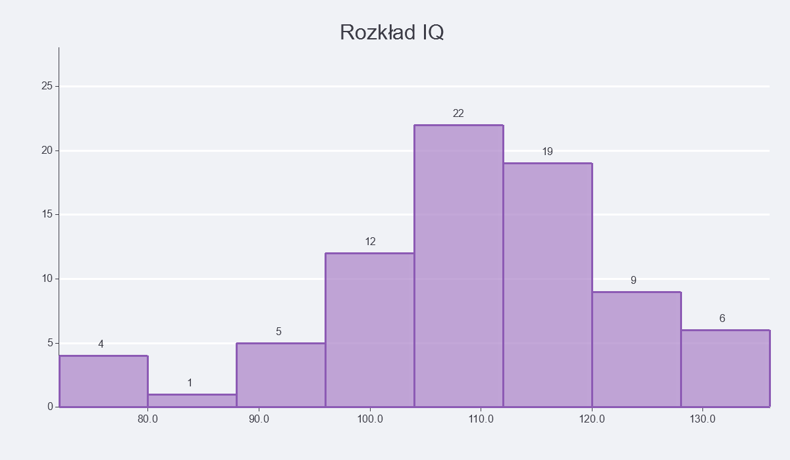
Rozkład IQ
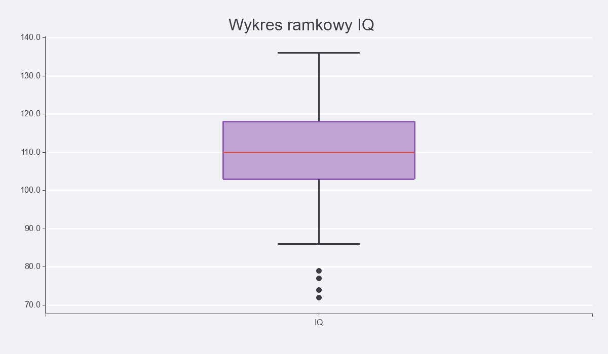
Wykres ramkowy IQ
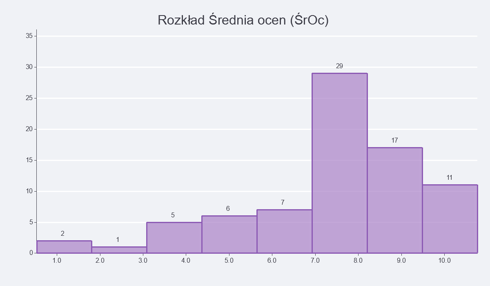
Rozkład Średnia ocen (ŚrOc)
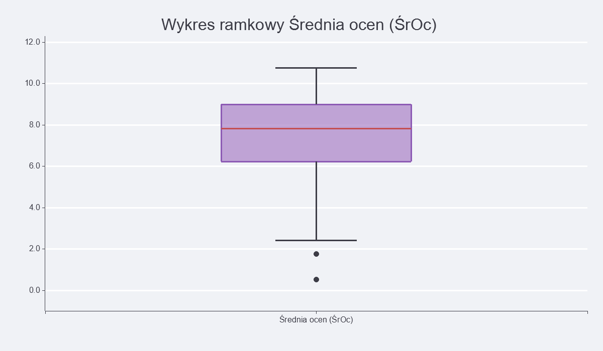
Wykres ramkowy Średnia ocen (ŚrOc)
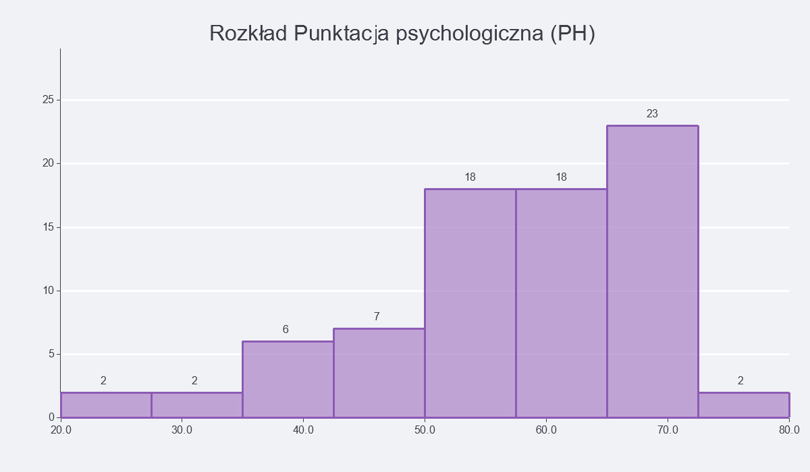
Rozkład Punktacja psychologiczna (PH)
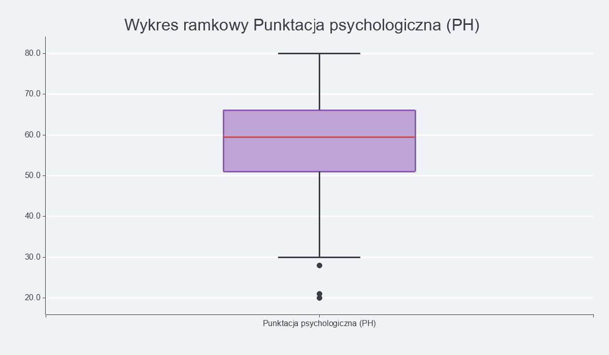
Wykres ramkowy Punktacja psychologiczna (PH)
Wniosek:
Na podstawie histogramów można zauważyć, że większość obserwacji dla wszystkich trzech zmiennych skupia się w określonych przedziałach wartości. W przypadku IQ największa liczba wyników znajduje się w przedziale około 100–120, co wskazuje na stosunkowo skoncentrowany rozkład. Histogram dla zmiennej ŚrOc pokazuje, że większość uczniów osiąga średnie oceny w przedziale około 6–9, natomiast niższe wartości pojawiają się znacznie rzadziej. W przypadku zmiennej PH największa liczba obserwacji mieści się w przedziale około 50–70 punktów, co wskazuje na skupienie wyników w tej części skali.
Wykresy ramkowe pokazują również obecność kilku obserwacji odstających, występujących głównie po stronie niższych wartości. Oznacza to, że w badanej próbie nie ma wyraźnych wartości skrajnie wysokich, pojawiają się natomiast pojedyncze jednostki uzyskujące wyniki niższe od większości grupy. Poza tym większość obserwacji znajduje się w stosunkowo wąskich przedziałach wartości, co sugeruje umiarkowaną spójność badanej próby.
| Statystyka | Chłopcy | Dziewczęta |
|---|---|---|
| Średnia | 111.35 | 105.44 |
| Mediana | 111.00 | 106.00 |
| Minimum | 77.00 | 72.00 |
| Maksimum | 136.00 | 132.00 |
| Kwartyl dolny (Q1) | 106.00 | 97.00 |
| Kwartyl górny (Q3) | 119.00 | 114.00 |
| Wariancja | 142.85 | 202.25 |
| Odchylenie standardowe | 11.95 | 14.22 |
| Współczynnik zmienności (CV) | 10.73% | 13.49% |
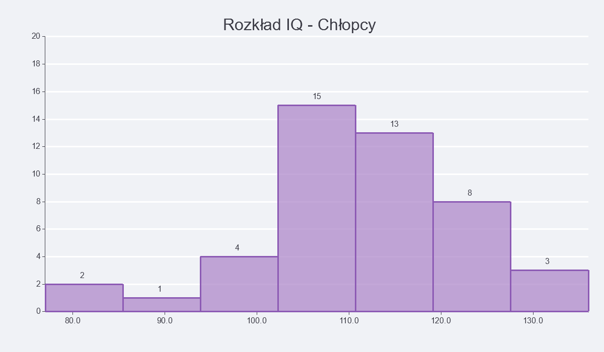
Rozkład IQ - Chłopcy
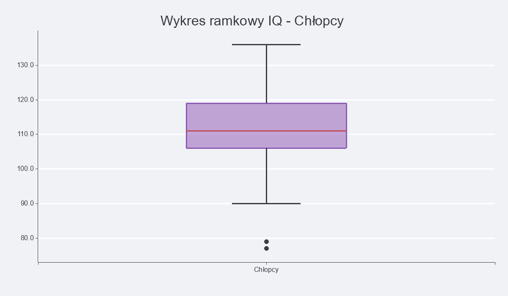
Wykres ramkowy IQ - Chłopcy
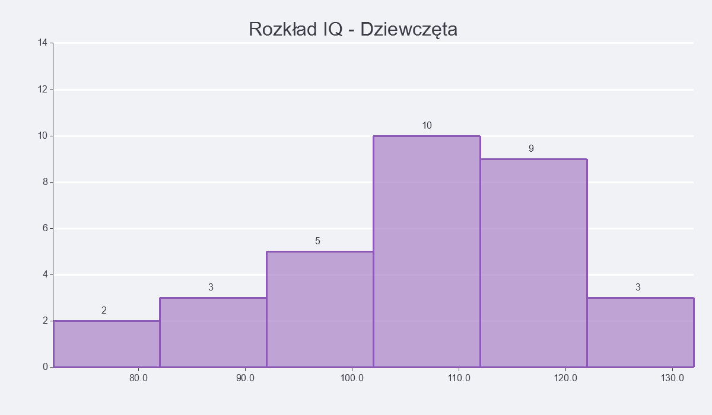
Rozkład IQ - Dziewczęta
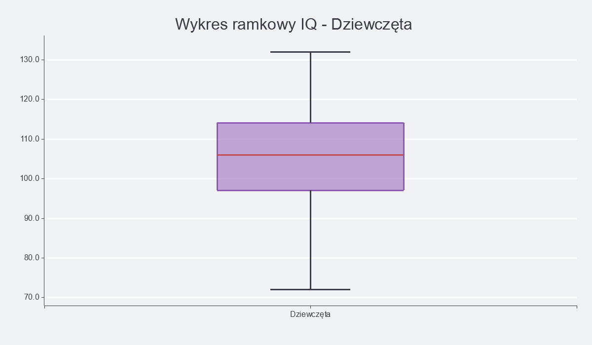
Wykres ramkowy IQ - Dziewczęta
| Statystyka | Chłopcy | Dziewczęta |
|---|---|---|
| Średnia | 7.28 | 7.68 |
| Mediana | 7.88 | 7.83 |
| Minimum | 0.53 | 3.41 |
| Maksimum | 10.76 | 10.70 |
| Kwartyl dolny (Q1) | 6.17 | 6.32 |
| Kwartyl górny (Q3) | 9.17 | 8.97 |
| Wariancja | 5.50 | 2.87 |
| Odchylenie standardowe | 2.34 | 1.69 |
| Współczynnik zmienności (CV) | 32.20% | 22.05% |
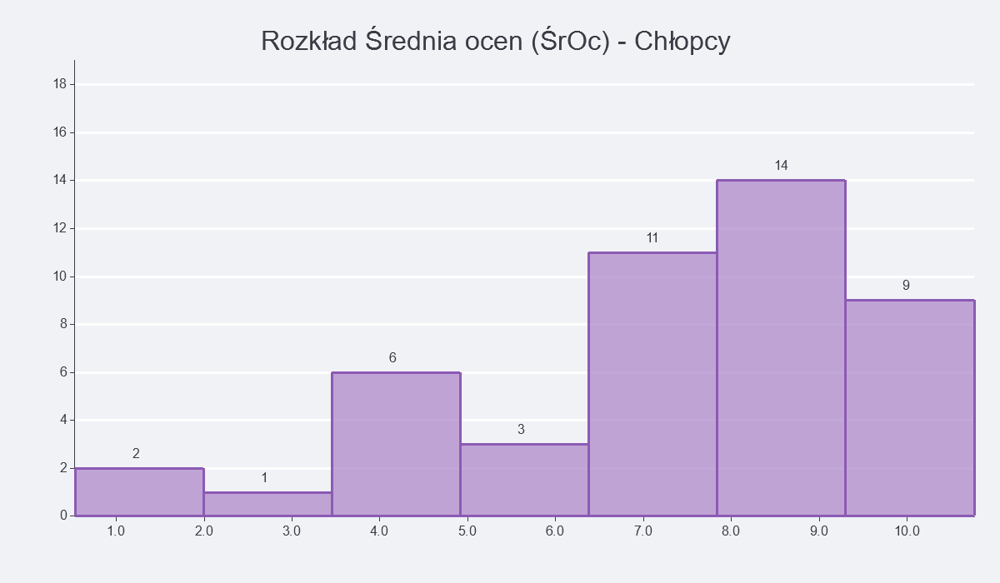
Rozkład Średnia ocen (ŚrOc) - Chłopcy
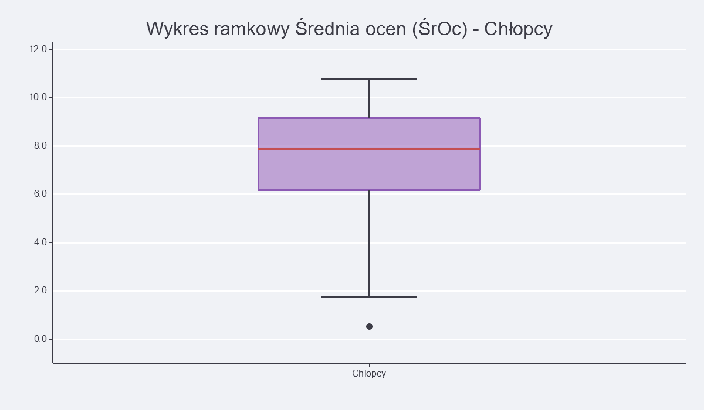
Wykres ramkowy Średnia ocen (ŚrOc) - Chłopcy
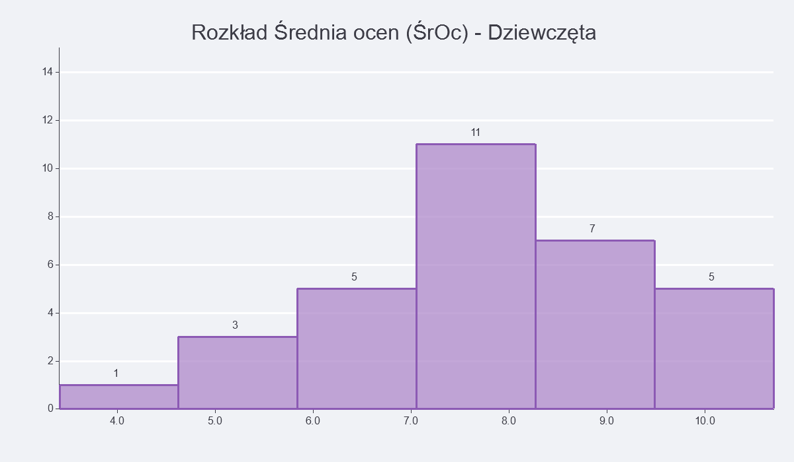
Rozkład Średnia ocen (ŚrOc) - Dziewczęta
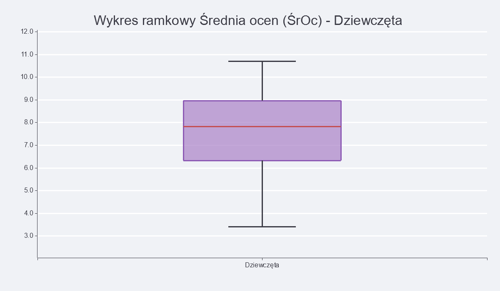
Wykres ramkowy Średnia ocen (ŚrOc) - Dziewczęta
| Statystyka | Chłopcy | Dziewczęta |
|---|---|---|
| Średnia | 57.85 | 55.69 |
| Mediana | 59.00 | 60.00 |
| Minimum | 20.00 | 21.00 |
| Maksimum | 80.00 | 72.00 |
| Kwartyl dolny (Q1) | 51.00 | 51.50 |
| Kwartyl górny (Q3) | 67.00 | 64.00 |
| Wariancja | 153.55 | 156.93 |
| Odchylenie standardowe | 12.39 | 12.53 |
| Współczynnik zmienności (CV) | 21.42% | 22.50% |
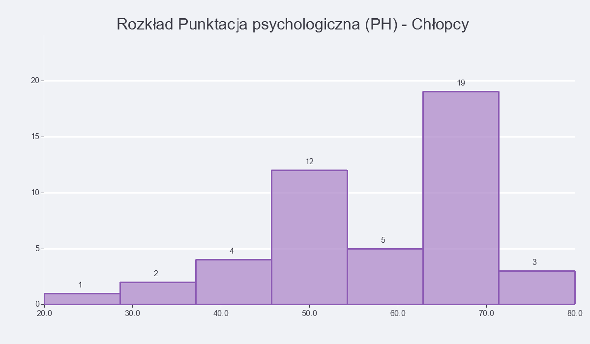
Rozkład Punktacja psychologiczna (PH) - Chłopcy
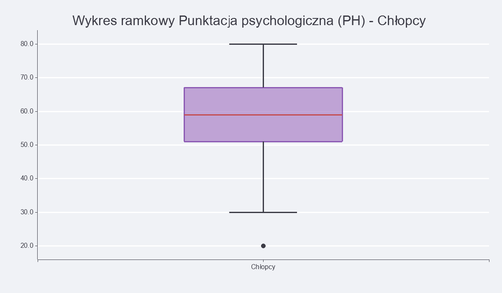
Wykres ramkowy Punktacja psychologiczna (PH) - Chłopcy
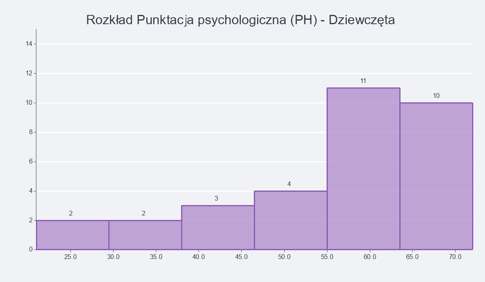
Rozkład Punktacja psychologiczna (PH) - Dziewczęta
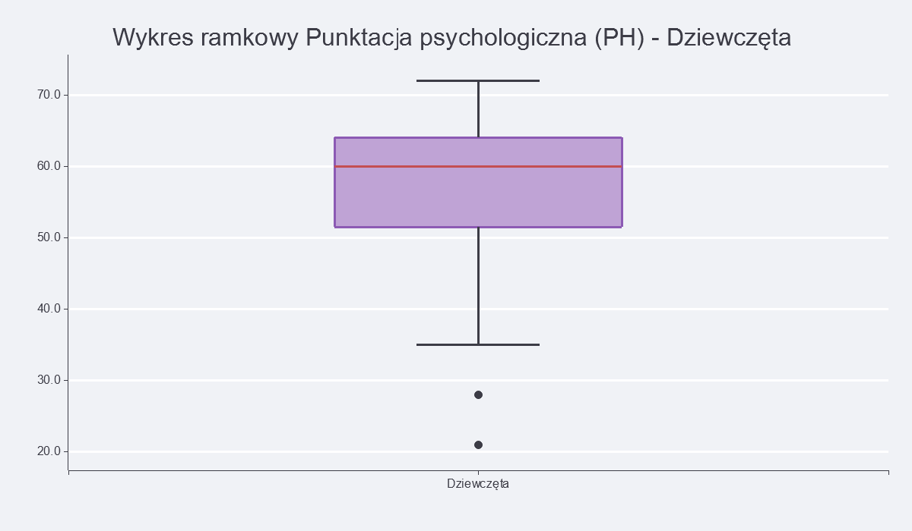
Wykres ramkowy Punktacja psychologiczna (PH) - Dziewczęta
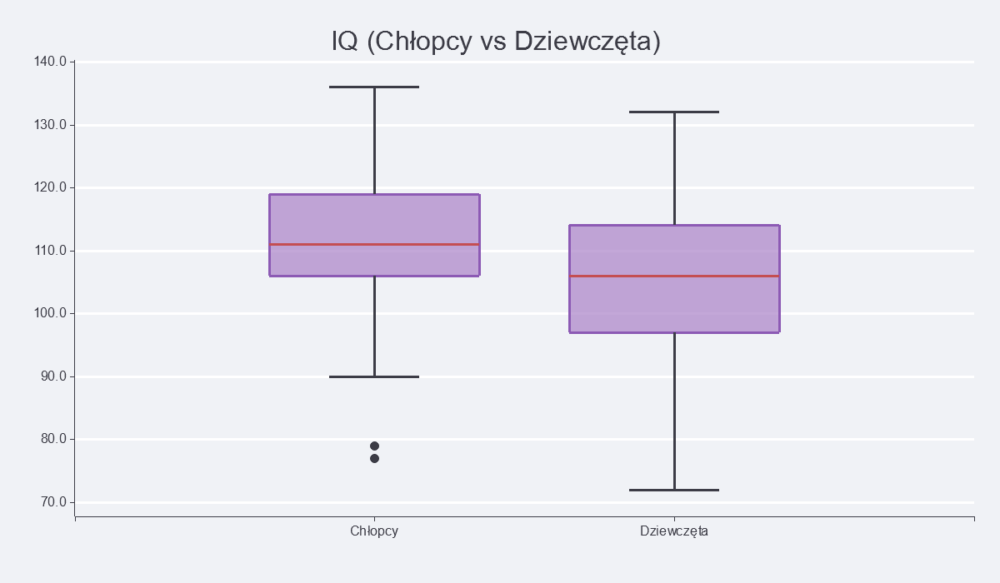
IQ (Chłopcy vs Dziewczęta)
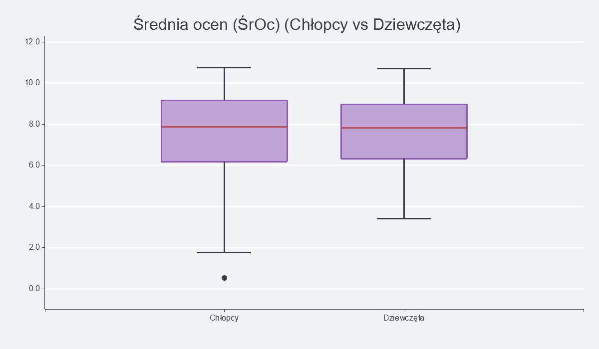
Średnia ocen (ŚrOc) (Chłopcy vs Dziewczęta)
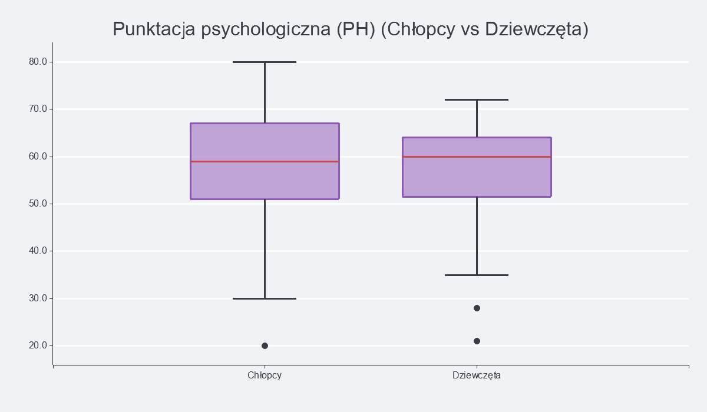
Punktacja psychologiczna (PH) (Chłopcy vs Dziewczęta)
Wniosek:
Na podstawie obliczonych statystyk oraz wykresów można zauważyć kilka różnic między grupą chłopców i dziewcząt. W przypadku IQ wyższe wartości średniej i mediany uzyskali chłopcy (średnia: 111.35, mediana: 111.00) niż dziewczęta (średnia: 105.44, mediana: 106.00). Jednocześnie u dziewcząt występuje większe zróżnicowanie wyników IQ, o czym świadczą wyższe wartości wariancji, odchylenia standardowego oraz współczynnika zmienności. Boxploty pokazują ponadto, że w obu grupach występują pojedyncze niższe obserwacje odstające, przy czym u dziewcząt rozkład jest bardziej rozproszony.
W przypadku średniej ocen (ŚrOc) sytuacja jest odwrotna - nieco wyższą średnią uzyskały dziewczęta (7.68) niż chłopcy (7.28). Mediany obu grup są jednak bardzo zbliżone (7.83 dla dziewcząt i 7.88 dla chłopców), co oznacza, że typowy poziom ocen jest podobny, lecz w grupie chłopców pojawia się większy rozrzut wyników. Potwierdzają to wyraźnie większe wartości wariancji, odchylenia standardowego i współczynnika zmienności u chłopców. Dodatkowo u chłopców występuje bardzo niska wartość minimalna (0.53), która może być obserwacją odstającą i obniżać średnią tej grupy.
W przypadku punktacji psychologicznej (PH) różnice między grupami są niewielkie. Chłopcy osiągnęli nieco wyższą średnią (57.85) niż dziewczęta (55.69), natomiast mediany są bardzo podobne (59.00 i 60.00). Zmienność wyników PH w obu grupach jest zbliżona, choć minimalnie większa u dziewcząt. Na wykresach ramkowych widać również pojedyncze niższe obserwacje odstające w obu grupach, ale ogólny rozkład punktacji psychologicznej jest podobny.
Podsumowując, chłopcy uzyskali wyższe wyniki IQ, dziewczęta osiągnęły nieco wyższą średnią ocen, natomiast w przypadku PH różnice są niewielkie. Największe różnice między grupami dotyczą więc poziomu IQ oraz zmienności wyników szkolnych.
Zbyt mała liczba klas prowadzi do nadmiernego uproszczenia wykresu. Histogram traci szczegóły, przez co rzeczywisty kształt rozkładu staje się słabiej widoczny.
Rozkład IQ (Zbyt mało klas)
W tej wersji wykorzystano liczbę klas wyznaczoną na podstawie reguły Sturgesa. Taki dobór pozwala zachować równowagę pomiędzy czytelnością wykresu a ilością informacji o rozkładzie danych.
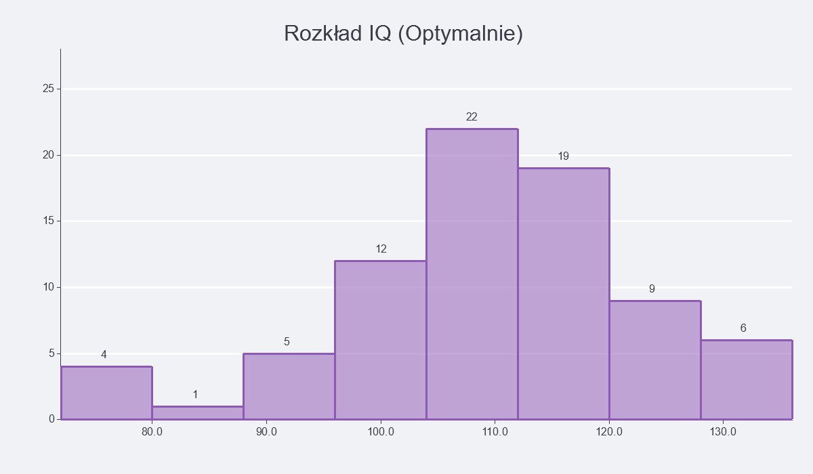
Rozkład IQ (Optymalnie)
Zbyt duża liczba klas powoduje „poszarpanie” histogramu i zbyt dużą ilość słupków. Na wykresie pojawiają się przypadkowe wahania oraz puste luki, które utrudniają ocenę rzeczywistego rozkładu zmiennej.

Rozkład IQ (Zbyt dużo klas)
Wniosek:
Wybór liczby klas ma istotny wpływ na interpretację histogramu. Zbyt mała liczba klas nadmiernie upraszcza obraz danych, natomiast zbyt duża eksponuje przypadkowy szum i utrudnia odczytanie ogólnych tendencji. Spośród przedstawionych wariantów najbardziej użyteczny jest histogram z liczbą klas wyznaczoną według reguły Sturgesa, ponieważ najlepiej zachowuje równowagę między przejrzystością wykresu a dokładnością odwzorowania rozkładu danych.
Badana próba zawiera 55899 obserwacji. Analizie poddano roczne zarobki respondentów w dolarach amerykańskich.
| Statystyka | Wartość |
|---|---|
| Średnia | 37864.61 |
| Mediana | 29717.00 |
| Minimum | -24998.00 |
| Maksimum | 425510.00 |
| Q1 | 17000.00 |
| Q3 | 46505.00 |
| Wariancja | 1307402975.22 |
| Odchylenie std. | 36158.03 |
| CV (%) | 95.49 |
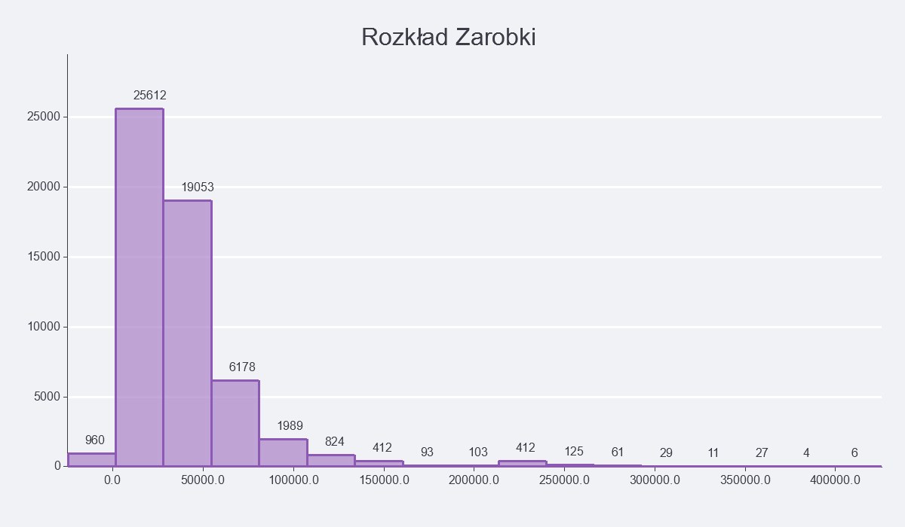
Rozkład Zarobki
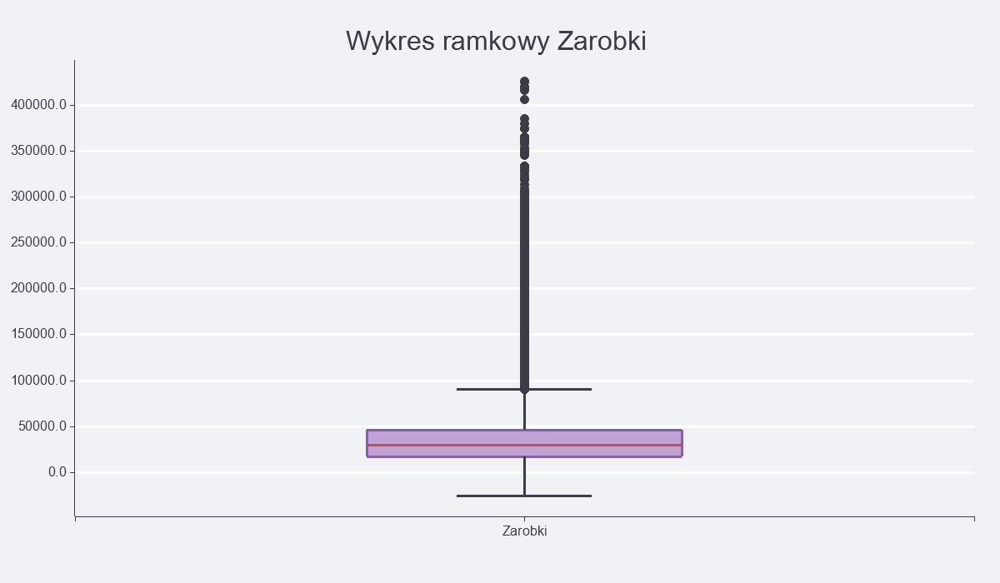
Wykres ramkowy Zarobki
Wniosek:
Rozkład zarobków ma charakter asymetryczny prawostronnie, czyli skośny prawostronnie, co oznacza, że większość osób osiąga relatywnie niższe dochody, natomiast niewielka grupa uzyskuje bardzo wysokie zarobki. W konsekwencji średnia jest większa od mediany, co wskazuje na wpływ wysokich wartości odstających. Histogram ujawnia koncentrację obserwacji w dolnych przedziałach oraz długi ogon po stronie wyższych dochodów. W danych mogą występować również ujemne wartości dochodów, które mogą wynikać np. ze strat działalności gospodarczej lub specyfiki sposobu raportowania dochodów.
W tej części porównano poziom zarobków w sześciu grupach wykształcenia: od wykształcenia podstawowego do wyższego magisterskiego.
| Poziom wykształcenia | Średnia | Mediana | Minimum | Maksimum | Q1 | Q3 | Odch. std. | CV |
|---|---|---|---|---|---|---|---|---|
| Podstawowe | 18979.58 | 15765.00 | -9999.00 | 362302.00 | 10400.00 | 23835.00 | 17137.76 | 90.30% |
| Niepełne średnie | 21037.41 | 17011.00 | -9999.00 | 362302.00 | 10500.00 | 27000.00 | 19449.56 | 92.45% |
| Średnie | 28646.15 | 24428.00 | -9999.00 | 425510.00 | 15000.00 | 36256.00 | 23905.37 | 83.45% |
| Niepełne wyższe | 34660.74 | 29500.00 | -9999.00 | 419304.00 | 18006.50 | 43511.50 | 28429.47 | 82.02% |
| Wyższe (licencjat) | 49916.61 | 40072.00 | -9999.00 | 424770.00 | 25841.00 | 61250.00 | 41548.38 | 83.24% |
| Wyższe (magister) | 70727.34 | 55350.00 | -24998.00 | 415928.00 | 36022.50 | 83522.00 | 56859.55 | 80.39% |
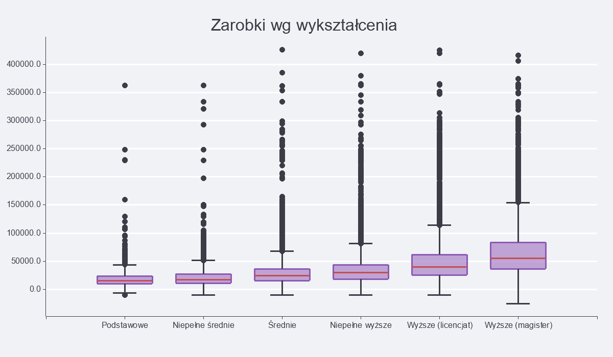
Zarobki wg wykształcenia
Wniosek:
Zarobki wykazują wyraźną zależność od poziomu wykształcenia. Wraz ze wzrostem poziomu edukacji rosną zarówno średnie, jak i mediany dochodów. Osoby z wykształceniem wyższym osiągają istotnie wyższe dochody niż osoby z niższym poziomem wykształcenia. Jednocześnie w każdej grupie widoczne jest znaczne zróżnicowanie, co oznacza, że wykształcenie nie jest jedynym czynnikiem wpływającym na poziom zarobków. W grupach o wyższym wykształceniu częściej występują również wartości ekstremalne, co wskazuje na większe możliwości osiągania bardzo wysokich dochodów.
| Statystyka | Wartość |
|---|---|
| Średnia | 46489.47 |
| Mediana | 36000.00 |
| Minimum | -24998.00 |
| Maksimum | 425510.00 |
| Q1 | 22146.00 |
| Q3 | 55853.00 |
| Wariancja | 1762121910.83 |
| Odchylenie std. | 41977.64 |
| CV (%) | 90.29 |
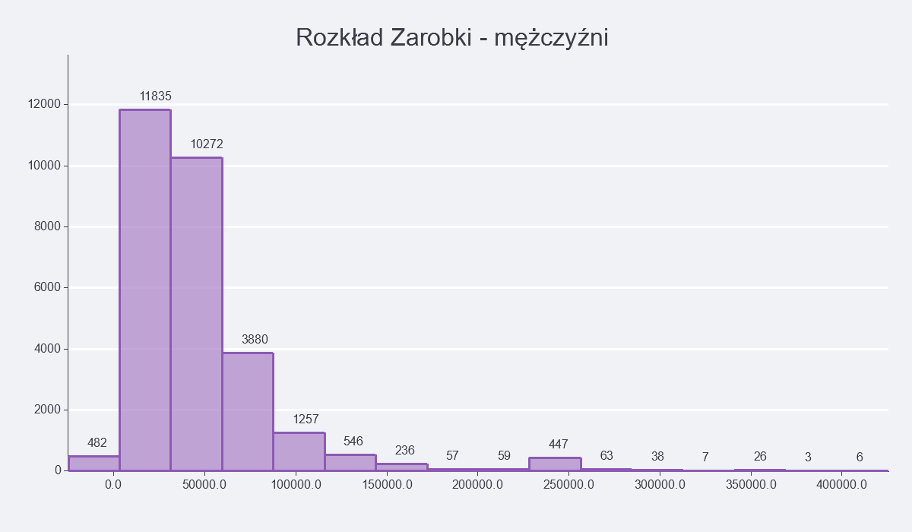
Rozkład Zarobki - mężczyźni
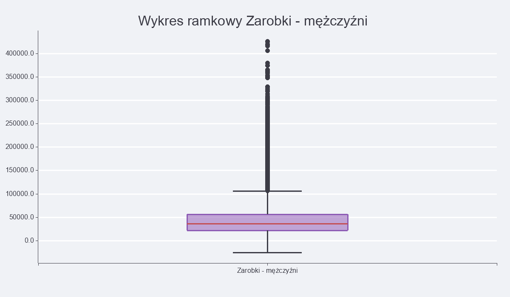
Wykres ramkowy Zarobki - mężczyźni
| Statystyka | Wartość |
|---|---|
| Średnia | 28422.35 |
| Mediana | 23012.00 |
| Minimum | -9999.00 |
| Maksimum | 385068.00 |
| Q1 | 13004.00 |
| Q3 | 36200.00 |
| Wariancja | 639035925.62 |
| Odchylenie std. | 25279.16 |
| CV (%) | 88.94 |
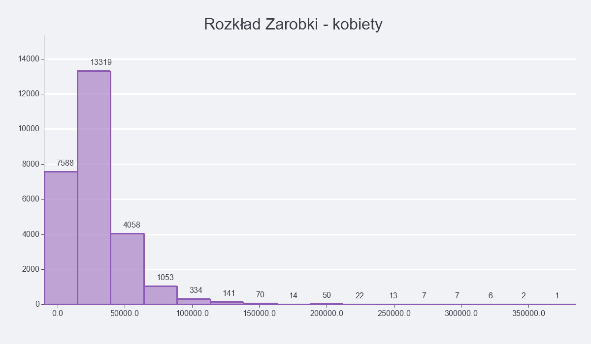
Rozkład Zarobki - kobiety
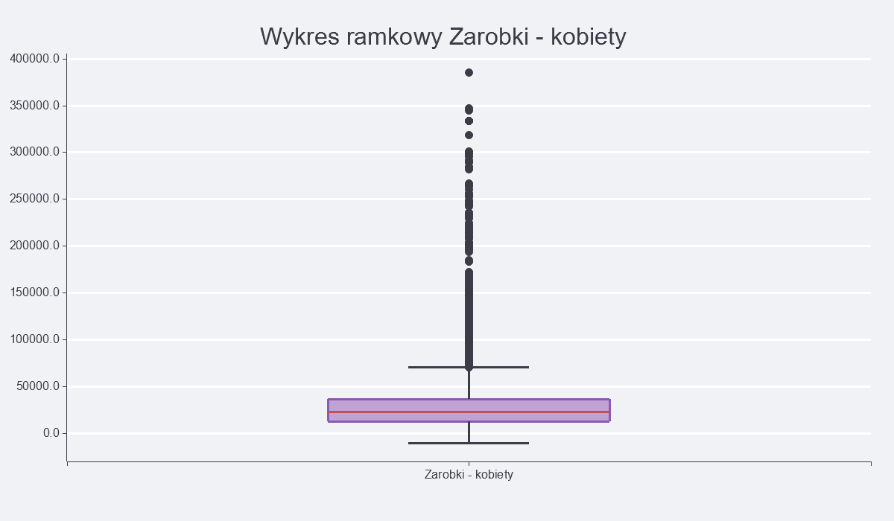
Wykres ramkowy Zarobki - kobiety
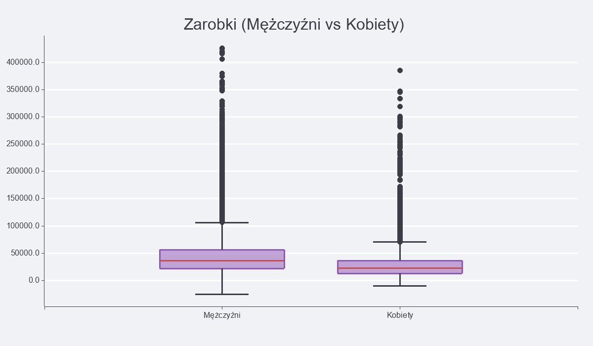
Zarobki (Mężczyźni vs Kobiety)
Wniosek:
Analiza danych wskazuje na różnice w poziomie zarobków między mężczyznami a kobietami. Mężczyźni osiągają wyższe wartości średnie i mediany (średnia: 46489.47, mediana: 36000.00) niż kobiety (średnia: 28422.35, mediana: 23012.00). Jednak na podstawie tych danych nie można jednoznacznie stwierdzić istnienia związku przyczynowego. Różnice te mogą wynikać z wielu czynników, takich jak wykształcenie, sektor zatrudnienia czy struktura rynku pracy. W związku z tym obserwujemy jedynie korelację, a nie dowód bezpośredniego wpływu płci na poziom dochodów.
W celu wyznaczenia „przeciętnego zarobku” można rozważyć różne miary tendencji centralnej. Najczęściej stosowane są średnia arytmetyczna oraz mediana.
| Miara | Wartość |
|---|---|
| Średnia | 37864.61 |
| Mediana | 29717.00 |
Wniosek:
Ze względu na silną asymetrię rozkładu zarobków oraz obecność wartości odstających, średnia arytmetyczna nie jest najlepszą miarą „przeciętnego” dochodu. Znacznie lepszą miarą jest mediana, ponieważ jest odporna na wpływ skrajnych wartości. Mediana lepiej oddaje typowy poziom dochodu większości populacji, podczas gdy średnia może być zawyżona przez niewielką grupę osób o bardzo wysokich zarobkach.